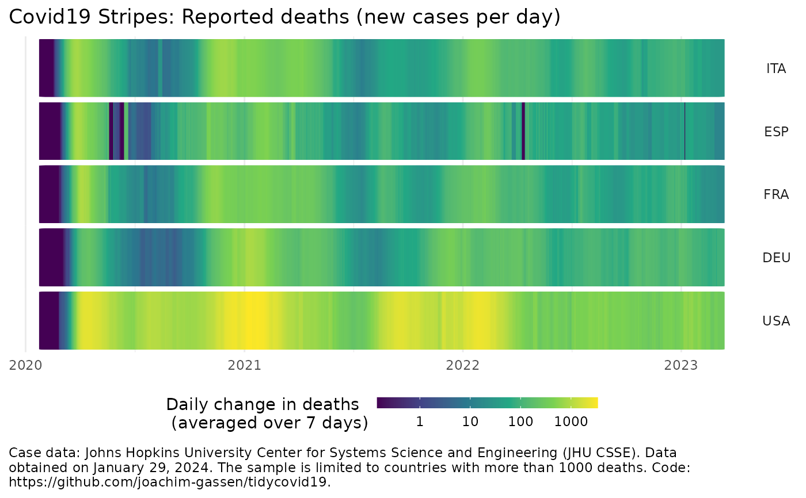

plot_covid19_stripes.RdProvides a flexible visualization of the country-level Covid-19 spread, plotted by colored daily lines to generate a stripes display. Uses data from the Johns Hopkins University CSSE team (https://github.com/CSSEGISandData/COVID-19) and the World Bank (https://data.worldbank.org).
plot_covid19_stripes( data = download_merged_data(cached = TRUE, silent = TRUE), type = "deaths", min_cases = ifelse(per_capita, ifelse(type == "deaths", 5, 50), ifelse(type == "deaths", 1000, 10000)), cumulative = FALSE, change_ave = 7, per_capita = FALSE, population_cutoff = 0, diverging_color_scale = FALSE, countries = NULL, sort_countries = NULL, data_date_str = format(lubridate::as_date(data$timestamp[1]), "%B %d, %Y") )
| data | The data frame to base the plot on. Should be a merged data
frame obtained by download_merged_data and defaults to
|
|---|---|
| type | The statistic that you want to plot. Needs to be either "confirmed", "deaths", "recovered" or "active", defined as the difference of "confirmed", "deaths" and "recovered". |
| min_cases | Only countries that have a maximum of |
| cumulative | If |
| change_ave | Number of days to average over when you plot daily changes. |
| per_capita | If |
| population_cutoff | Do you want to restrict the plot to countries that exceed a certain population cutoff? Takes a value in millions and defaults to 0. Useful for per capita displays. |
| diverging_color_scale | Should be set to |
| countries | A character vector of ISO3c (ISO 3166-1 alpha-3) codes that you want to include. Note that including many countries can lead to long plotting times and might cause the plot to fail rendering when the display is to small. |
| sort_countries | By default, countries are sorted alphabetically by
ISO3c code. "start" will sort countries by when they first exceeded
|
| data_date_str | A date string to include in the annotation of the plot giving the time when the data was pulled. Defaults to the timestamp of the data. Note that you might run into issues with the default when running this in a non-english locale. Consider setting it by hand then. |
A ggplot2 oobject.
plot_covid19_stripes()merged <- download_merged_data(cached = TRUE, silent = TRUE) plot_covid19_stripes(merged, per_capita = TRUE, population_cutoff = 10)#>plot_covid19_stripes(merged, countries = c("ITA", "ESP", "FRA", "DEU", "USA"), sort_countries = "countries" )sortdf <- dplyr::tibble( iso3c = unique(merged$iso3c), continent = countrycode::countrycode(iso3c, "iso3c", "continent") ) %>% dplyr::arrange(continent, iso3c) df <- merged df$iso3c <- factor(merged$iso3c, sortdf$iso3c) plot_covid19_stripes(df, type = "confirmed")